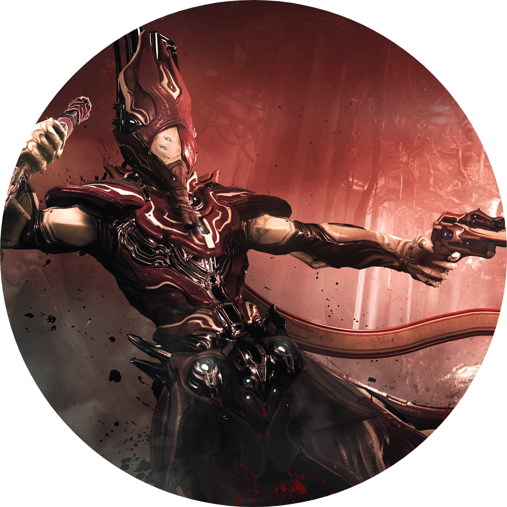

HONORABLE WARFRAMES
Warframe who fought courageously against The Grineers, Infested, Corpus, Sentients and the Orokins


Store
Ninja's Play Free
Back to top
|
Chains of Harrow " Harrow the monastic, the ritualist. Harrow is suffragan to the Void. Will you believe, Tenno? ". Dauntless and devout, the dark priest Harrow bestows upon his coven three virtues: salvation through sacrifice, redemption through vengeance, and ascension through defiance.Nemeses beware, for only death awaits. Enchain the tainted, silence their heresy, and deliver their tormented souls unto the Void's embrace. After the Orokin recovered the derelict Zariman and retrieved the Tenno children, Rell was yet again "cast out" from the rest of the Tenno, possibly due to the Orokin deeming Rell unfit for the combat duties they forced upon the other Tenno. Rell was eventually taken in by the precursors of the Red Veil. They studied his teachings about the dangers of the Void, eventually coming to call the Void entity he perceived as "The Indifference" or "The Lidless Eye". Rell preferred to call it "The Man in the Wall". Denied access to Margulis' cryosleep and the Dream that preserved the other Tenno, Rell eventually and willingly sacrificed himself in a ritual the Veil believed would seal The Indifference out of the mortal plane. Rell's spirit was bound to his Warframe, Harrow, which was then chained in the Red Veil's sacred temple in a Derelict. Due to his prolonged life, Rell's spirit became splintered and separated from his vessel. While the Tenno try to recover the fragments of his mind, Rell repeatedly mentions that The Man in the Wall is listening to the Tenno and grows stronger from that. Lotus and Ordis, however, explains it away as Void induced delusions and loss of control over Transference. Eventually Palladino, Speaker of The Veil, asks Tenno to destroy the vessel, thus freeing the weakened Rell, so he would be able to "rest", and placing the burden of holding off The Indifference on all remaining Tenno. |
 |
|
Store
Ninja's Play Free
Back to top